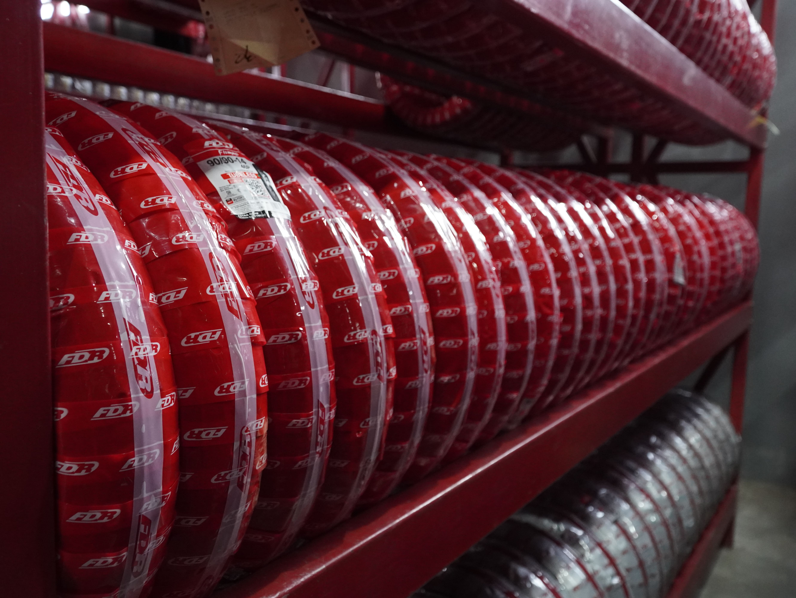
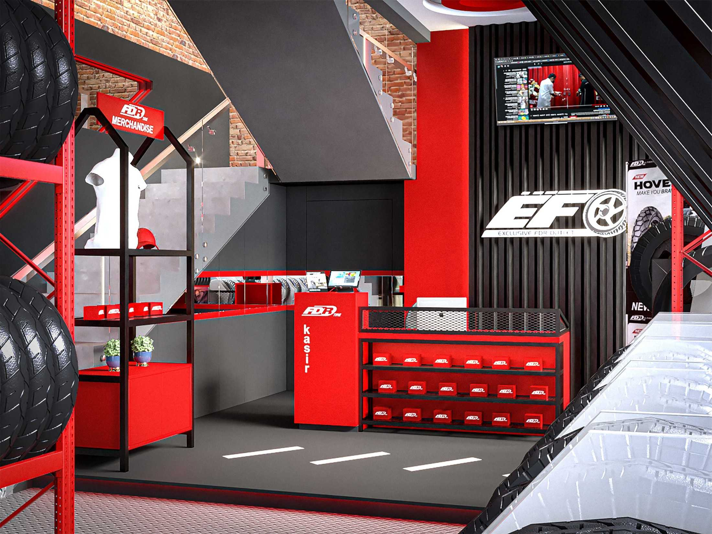
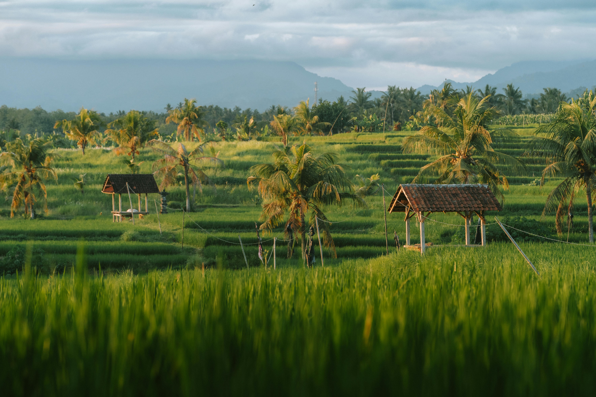
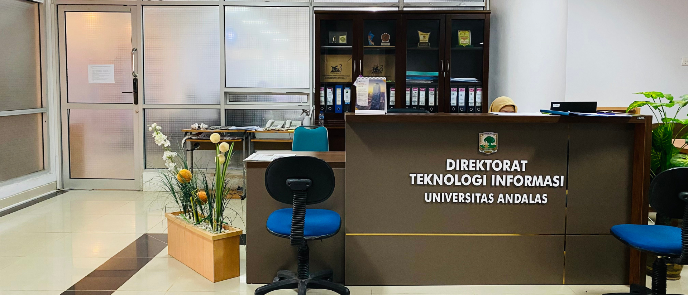
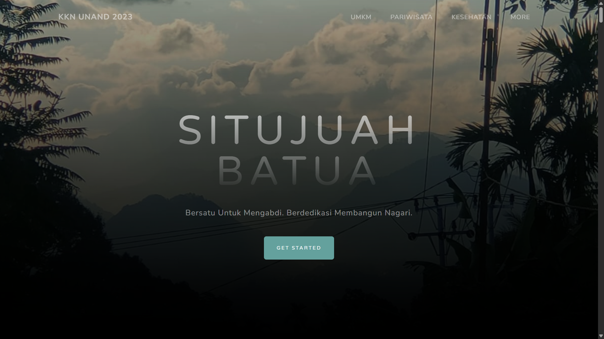

Featured Projects
Kumpulan karya pengembangan sistem informasi dan kecerdasan buatan.

Web Profile PT. Hasta Raya Sumbar (Webcommerce)
Platform web profil resmi dan e-commerce untuk Hasta Raya Sumbar.
Company Profile
Webcommerce

HR Tracker (Sales Monitor & Orders)
Sistem manajemen orders dan sales tracking untuk Hasta Raya Sumbar.
Tracking System
WebApp

Sistem Informasi Deteksi Penyakit Padi LPHP BPTPH Sumatera Barat
Sistem Informasi Deteksi Penyakit Padi yang dapat menghasilkan Laporan Peringatan Bahaya dan Rekomendasi Penanganan
Thesis
AI
Web

Sistem Informasi Inventaris DTI Universitas Andalas
Pencatatan inventaris di Direktorat Teknologi Informasi Universitas Andalas.
Internship
Inventory Management

Prototype Web KKN Situjuah Batua
Platform informasi digital untuk Nagari Situjuah Batua untuk transparansi publik.
KKN
Web Prototype
Lihat Project Lainnya
Kunjungi repository GitHub